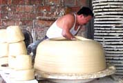
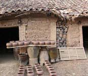
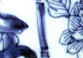

| Jingdezhen 2004
1000 Years - Celebration of Porcelain
In
2004 the City of
Jingdezhen will host the world to celebrate 1000 years as an
imperial kiln production center, beginning with the Song Emperor
Jing De in 1004. The story of Jingdezhen porcelain and its export
throughout the world is an important chapter in the history of China
and a foundation stone of world ceramic art. Jingdezhen porcelain
captures the very heart of ceramic history, beginning with the spiritual
beauty of Song, the natural essence of Yuan, the immeasurable blue
of Ming, the multi-colored romanticism of Qing and the contemporary
creations of modern China.

Jingdezhen is called the Porcelain Capital of the World and from
here alone come the vast majority of all porcelain pieces ever produced.
It is the single place where all Chinese Imperial porcelain was
made during the Yuan, Ming and Qing dynasties.
In
light of the international importance of the history of porcelain,
the people of Jingdezhen have organized the Jingdezhen 1000 Years
Celebration of Porcelain in 2004. Jingdezhen City is proud to host
the Jingdezhen International Ceramics Conference in this significant
moment in its long and glorious history. Chinese contemporary ceramics
artists will be highlighted at the conference, with presentations,
lectures and an exhibition of Jingdezhen artists.
|
Members of the International Academy of Ceramics are offered
a special 10-day tour program of China to include 4 days in
Jingdezhen.
Art-related
travel tours have been carefully chosen to reflect art
and craft and are geared both towards the first-time China
traveler, and return visitors. The Introduction to China tour
will give an overview of the art and history of China. A Scholar’s
Dream tour will visit the sites of interest to ancient Chinese
scholars. Trips to Yunnan will focus on dramatic landscapes
and ethnic diversity.
- Ma Ning
Director of Office for International Ceramic Art
Jingdezhen 1000 Years Celebration of Porcelain
- Li Jiansheng
Executive Assistant of Office for International Ceramic
Art
Jingdezhen 1000 Years Celebration of Porcelain
President of Jingdezhen Sanbao Ceramic Art Institute
- Steve Brousseau
International Liaison
|
Sponsorship of Jingdezhen 1000 Years Celebration of Porcelain
3-week Travel Program in China
- 6-day travel from Shanghai to Jingdezhen
- 7-day workshops/sightseeing in Jingdezhen
- 8-day travel from Jingdezhen on either Introduction to China,
Intimate or
Yunnan Tour.
Introduction
to China: History, Ceramics and Art
Intimate China:
Chinese Scholars Dream
Yunnan: Ethnic
Diversity and Crafts
Winter Tour Program
Tropical Paradise
of Yunnan in Winter
Enquiries may be made to jingdezhen1000@yahoo.com
or check out the Jingdezhen
2004 website.
More Articles
Raku links
|